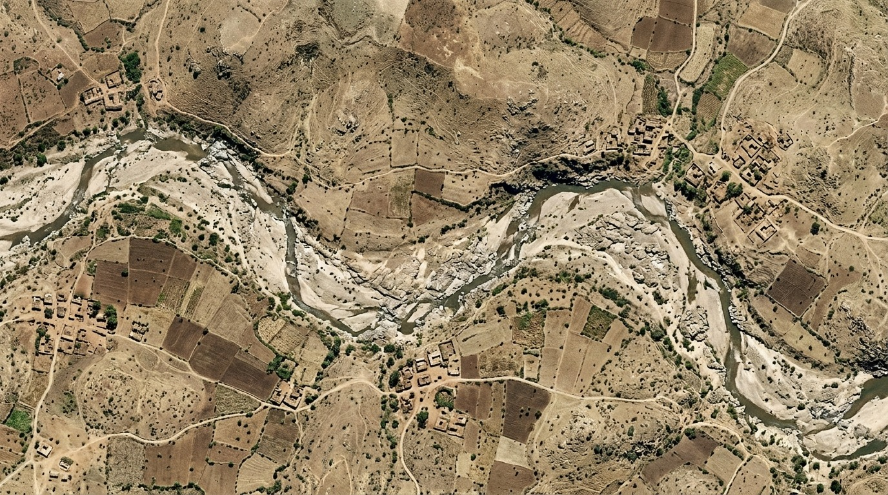
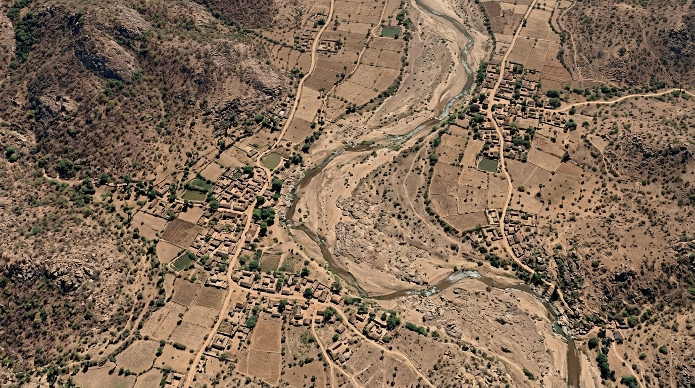
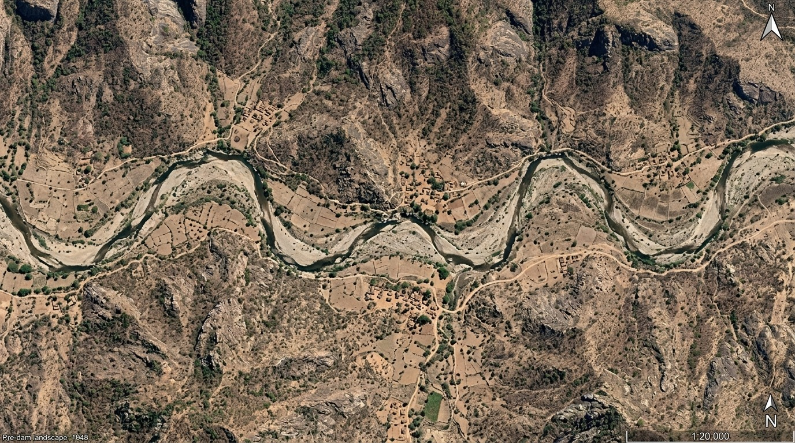

Catchment Area
482.5 ha
Delineated Micro-Catchment
Design Rainfall
845 mm
Annual IMD Gridded Mean
Mean Terrain Slope
5.8%
Gentle-to-Moderate Relief
Planned Interventions
6 Units
Ridge-to-Valley Sited
STAGE 1
Multi-Source Ingestion & Earth Observation
IN-01
Live STAC API
Sentinel-2 Multispectral
Bands 2, 3, 4, 8, 11 (10m–20m resolution) Surface Reflectance for NDVI & NDWI.
OUT: GeoTIFF Rasters
IN-02
Copernicus 30m
Hydro-DEM & Topography
Digital Elevation Model for pit-filling, slope percentages, and elevation contours.
OUT: Elevation Matrix
IN-03
IMD Gridded
Precipitation & Meteorology
Daily 0.25° gridded rainfall data, 24-hr design storm event, and climate normals.
OUT: Design P (845 mm)
IN-04
Mobile Survey
Field GPS & Photo Telemetry
EXIF-tagged ground coordinates, heading, and baseline ground truthing points.
OUT: Waypoint Telemetry
▼
STAGE 2
GIS Pre-Processing & Stream Flow Routing
GIS-01
Wang-Liu Algo
Hydro-Enforcement & Sink Fill
Removes artificial terrain depressions; creates hydrologically continuous elevation.
OUT: Conditioned DEM
GIS-02
D8 Routing
Flow Direction & Accumulation
Calculates downstream flow paths and delineates micro-watershed catchment boundaries
(482.5 ha).
OUT: GeoJSON Polygon
GIS-03
Strahler Logic
Stream Order Network (1–3)
Extracts ridge gullies (Order 1), mid-slope tributaries (Order 2), and main valley
stream (Order 3).
OUT: Drainage Polylines
▼
STAGE 3
Hydrological Simulation & Yield Modeling
HYD-01
SoilGrids + LULC
Curve Number (CN) Derivation
Cross-matches Hydrologic Soil Group (Group B) with Land Use (Agriculture) to yield
CN = 74.
EQUATION: S = (25400/CN) - 254
HYD-02
Runoff Yield
SCS-CN Runoff Simulation
Calculates direct runoff depth $Q = 240.2\text{ mm}$ and total catchment runoff
volume = $1,158,000\text{ m}^3$.
OUT: Q = (P - Ia)² / (P - Ia + S)
HYD-03
70% Design Cap
Harvestable Rainwater Budget
Allocates harvestable target ($810,600\text{ m}^3$) vs required in-situ soil aquifer
infiltration ($2,918,000\text{ m}^3$).
OUT: Water Balance Breakdown
▼
STAGE 4
Decision Engine: Ridge-to-Valley Siting Matrix
SPATIAL DECISION GATE
Slope %, Stream Order & Geology
Slope %, Stream Order & Geology
BRANCH A: Ridge Zone (Slope > 10%, Order 0–1)
Continuous Contour Trenches (CCT)
Intercepts sheet runoff at crest; decelerates velocity, breaks erosive force, and
promotes slope afforestation.
STRUCTURE: INT-01 • 2,400 m³ capacity
BRANCH B: Transition (Slope 4–10%, Order 1–2)
Gully Plugs & Wire Gabions
Constructed in first/second order drainage courses to trap sediment silt and protect
against gully widening.
STRUCTURE: INT-02 / INT-03 • 2,250 m³
BRANCH C: Valley Floor (Slope < 4%, Order 2–3)
Masonry Check Dams & Percolation Tanks
Deep seasonal surface water storage and maximum vertical hydraulic head for
unconfined aquifer recharge.
STRUCTURE: INT-04 / INT-05 • 15,000 m³
▼
STAGE 5
Clean Energy & Solar PV Lift Irrigation
NRG-01
Wire-to-Water
Hydraulic Power Calculation
Evaluates Total Dynamic Head ($H = 25\text{ m}$) and daily discharge ($80\text{
m}^3/\text{day}$) to size 2.1 HP (1.56 kW) motor.
EQUATION: Ph = (rho * g * Q * H) / 3.6e6
NRG-02
Solar Array
Solar Photovoltaic Sizing
Sizes 1.95 kWp monocrystalline solar array operating over 5.5 Peak
Sun Hours to generate 2,574 kWh/year.
OUT: 1.95 kWp PV Array
NRG-03
Decarbonization
Emissions & Fuel Savings
Abates 2.21 Tonnes CO₂e/year and displaces 824 liters of
agricultural diesel fuel annually.
OUT: 55.2 tCO2e (25 yr)
▼
STAGE 6
Tamper-Proof Audit, DPR & Aquifer Outcome
VER-01
Geofence Verified
Geo-Camera EXIF Telemetry
Extracts tamper-proof metadata (11.0345°N, 76.0412°E, 418m MSL, 38° Azimuth) with
split before/after viewer.
VERIFIED: Within 8.4m of Site
DPR-01
1-Click Generator
Detailed Project Report (DPR)
Compiles BoQ, structural schedule (₹16.4 Lakhs budget, 23,150 m³ storage), and OGC
JSON data schemas.
EXPORT: JSON & Printable PDF
MON-01
+2.8m Water Rise
Aquifer & Biomass Monitoring
Continuous feedback loop: Sentinel-2 NDVI vegetative gain (+0.26) and 5.8m cumulative
water table recovery.
METRIC: 100% Water Security
Ready to Execute Watershed Lifecycle?
Follow each stage in sequence or interact with the live spatial studio.
Click any
location on the map to analyse its watershed potential
📍 Click the satellite map below
Drop a pin on the satellite map to analyse soil conditions, rainfall, river connections and watershed potential score.
Major Dams — Kaveri River Basin
Click a dam card to fly to its location and load it on the satellite map
🏛️
Krishnaraja Sagara (KRS)
Karnataka | Kaveri River
Capacity49.45 TMC
FRL124.8 ft (38.0 m)
Catchment11,616 km²
Height / Length39.6 m / 2,621 m
Commissioned1932
PurposeIrrigation + Bengaluru Water
Storage level
56.2%
(27.8 TMC live)
🛰️ Geo Imagery — Before & After

📍 Pre-Dam: Dry Cauvery River valley (c.1920s)
💧
Amaravathy Dam
Tamil Nadu | Amaravathy River
Capacity3 TMC
FRL90.00 ft
Catchment9.31 km²
Height / Length33.5 m / 1,650 m
Commissioned1957
PurposeAgricultural (Karur, Tiruppur)
Storage level
42%
(1.26 TMC live)
🛰️ Geo Imagery — Before & After

📍 Pre-Dam: Dry Amaravathy valley (c.1950s)
🌊
Bhavani Sagar Dam
Tamil Nadu | Bhavani River
Capacity32.8 TMC
FRL105.0 ft (32.0 m)
Catchment1,850 km²
Height / Length130 ft / 10,700 ft
Commissioned1955
PurposeIrrigation + Hydroelectric Power
Storage level
16.5%
(5.4 TMC live)
🛰️ Geo Imagery — Before & After

📍 Pre-Dam: Dry Bhavani River gorge (c.1948)
🏛️
Krishnaraja Sagara (KRS)
Karnataka | Kaveri River
Capacity49.45 TMC
FRL124.8 ft (38.0 m)
Catchment11,616 km²
Height / Length39.6 m / 2,621 m
Commissioned1932
PurposeIrrigation + Bengaluru Water
Storage level
56.2%
(27.8 TMC live)
💧
Amaravathy Dam
Tamil Nadu | Amaravathy River
Capacity3 TMC
FRL90.00 ft
Catchment9.31km²
Height / Length33.5 m / 1,650 m
Commissioned1957
PurposeAgricultural (Karur, Tiruppur)
Storage level
24.7%
(7.2 TMC live)
🛰️ Geo Satellite Imagery — Before & After Dam Construction
📍 Pre-Dam: Dry Amaravathy River valley & arid terrain (c.1950s)
🌊
Bhavani Sagar Dam
Tamil Nadu | Bhavani River
Capacity32.8 TMC
FRL105.0 ft (32.0 m)
Catchment1,850 km²
Height / Length130 ft / 10,700 ft
Commissioned1955
PurposeIrrigation + Hydroelectric power Generation
Storage level
16.5%
(5.412 TMC live)
🏛️
Coordinates
Input Parameters
24-Hour Design Rainfall (P)
845 mm
Catchment Area (A)
482.5 ha
Derived Curve Number (CN):
74
Runoff Coefficient (Q / P):
28.4%
Runoff Depth (Q)
240.2 mm
Direct Surface Runoff
Catchment Runoff Yield
1,158 k m³
Total Generated Runoff
Soil Infiltration
2,918 k m³
Natural Aquifer Replenishment
Harvestable Potential
810.6 k m³
70% Conservation Target
Visual Reservoir & Soil Column Water Level
Runoff Saturation: 28.4%
Surface Runoff Pool: 1,158k m³
Topsoil Layer (Organic A Horizon)
Subsurface Infiltration: 2,918k m³
Deep Weathered Bedrock Aquifer
S = (25400 / 74) - 254 = 89.2 mm | Ia = 17.8 mm
Q = (845 - 17.8)² / (845 - 17.8 + 89.2) = 240.2 mm
Total Catchment Yield = 1,158,965 m³
Hydrological Water Balance
Storm Runoff Hydrograph (Q vs Time) Peak Qp: 24.5 m³/s
Topographic Transect: Scientific Ridge-to-Valley Siting
Elevation: 485m → 408m MSLVisual Structural Sizing & Annual Aquifer Recharge Potential Capacity (m³) vs Recharge Yield (m³)
| ID | Structure Type | Topographic Zone | Stream Order | Storage Capacity | Recharge Yield | Estimated Cost | Status |
|---|
Pumping System Sizing
Total Dynamic Head (H = Static + Friction)
25 m
Daily Water Demand (Qd)
80 m³/day
Peak Sun Hours (PSH)
5.5 hrs
Conforms to MNRE (Ministry of New and Renewable Energy) PM-KUSUM Component-B solar agriculture pumping
guidelines.
Required Pump Motor
2.1 HP (1.56 kW)
Wire-to-Water Load (65% Efficiency)
Solar PV Array
1.95 kWp
6x 330W Monocrystalline Panels
Annual Clean Energy
2,574 kWh/yr
300 Active Solar Days/Year
CO₂ Abatement
2.21 t/yr
824 L Diesel Displaced
Visual Dynamic Head & Energy Distribution Wire-to-Water Head Loss Analysis
Suction Water Level (0m)
Total Dynamic Head: 25m
Discharge Outlet
Diurnal Solar Pumping Curve (6 AM – 6 PM) Peak: 16.8 m³/hr
Fossil Diesel vs Solar Lifecycle (25 Yr)
Field Photo EXIF Telemetry
Site Intervention ID:
INT-04 (Masonry Check Dam)
Verified Latitude:
11.034512° N
Verified Longitude:
76.041219° E
Terrain Elevation:
418.4 m MSL
Camera Azimuth / Bearing:
38° NNE
Capture Timestamp:
2026-09-22 10:35:18 UTC
Geofence Status:
Verified (8.4m from
target)
Auditing Inspector:
S. R. Patil, WDO Block-1
Evidence verified by cryptographic hash and submitted to WDC-PMKSY outcome monitoring registry.
Groundwater Rise
+2.8 meters
Observation Piezometers
NDVI Biomass Gain
+0.26 index
Post-Monsoon Sentinel-2
Irrigated Land Expansion
+145 ha
Rabi Season Double-Cropping
Drinking Water Security
100%
Zero Tanker Dependency
Groundwater Table Recovery (mbgl) Target: 7.0 mbgl by 2028
Vegetation & Satellite Indices (NDVI / NDWI / BSI) Post-Monsoon Sentinel-2
Groundwater Recovery
59%
Vegetation Cover
68%
Cropped Area Goal
72%
Drinking Water Security
100%
Carbon Sequestration
44%